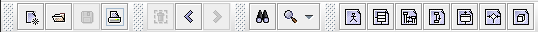

La barra de herramientas de ArgoUML's consiste de iconos/herramientas para las funciones má empleadas del menú: operaciones con archivos, navegación, busqueda y zoom, y creación de diagramas.
Volver a ArgoUML Tours Volver a ArgoUML Inicio